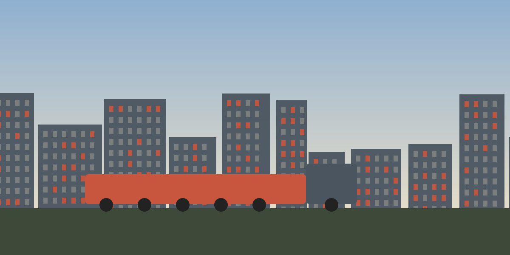

Between roughly 1910 and 1970, millions of Black Americans left the rural and small-town South for cities in the North, Midwest, and West. Newark was one of the destinations, and the movement changed the city's population, culture, and politics.
Why Families Left the South
Black families faced Jim Crow segregation, violence, and few economic opportunities in the South. Northern factories, which had needed workers during the World Wars, offered higher wages and the chance to build a better life. Many migrants came to Newark from Virginia, the Carolinas, and Georgia, often following relatives and friends who had arrived first.
Building a Community in Newark
Newcomers found work in factories, in service jobs, and on the railroads, but they also met discrimination. Redlining and restrictive practices kept many Black families in a small number of neighborhoods, especially in the Central Ward and the Hill section. Even so, those neighborhoods became centers of churches, newspapers, businesses, music, and civic organizing.
- Black churches served as spiritual, social, and political hubs
- Jazz clubs and music halls made Newark part of the East Coast music scene
- Community groups pushed for fair housing, jobs, and political representation
A Changing City
The shift in Newark's population was dramatic. Black residents made up less than ten percent of the city in 1930, about 17 percent in 1950, roughly a third in 1960, and more than half by 1970. This change in who lived in Newark is one of the most important threads in the city's modern history, and it unfolded alongside the departure of many white residents described on the next page.